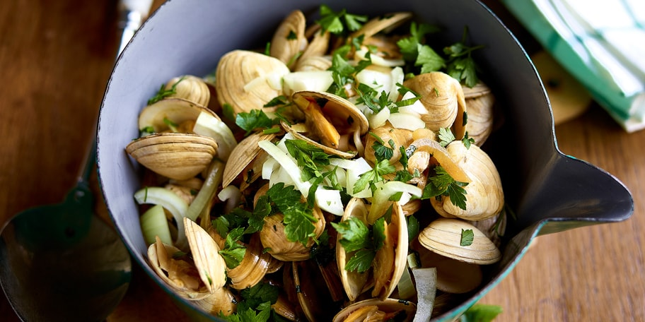

Pasta vongole

Ingredienten
- 2Kg venussschelpen
- 3 uien
- 2 teentjes knoflook
- 1 bot platte peterselie
- 2cl room
- 1dl Guinnes
- 1 eetlepel boter
- peper & zout
Bereiding
- Pel en snipper de uien fijn. Pel de knoflook en haal hem door de lookpers zodat je een puree krijgt. Hak de peterselie fijn en zet even apart.
- Zet een grote pan op het vuur met de boter, de uien, de knoflookpuree en de helft van de peterselie en laat kort stoven. Voeg de room, de schelpen en het bier erbij. Plaats het deksel op de pot en laat op een hoog vuur garen gedurende 6 à 8 min, tot de schelpen openen.
- Kruid met peper en zout en voeg de resterende peterselie toe. Serveer meteen.